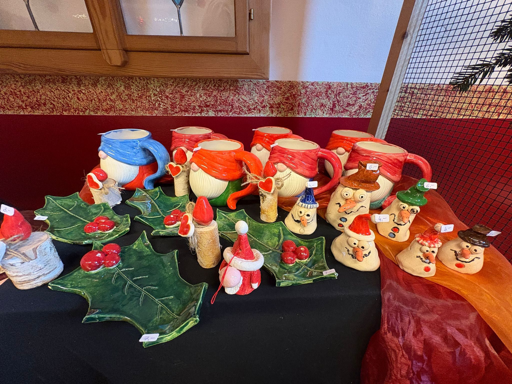

Juli 2026
Flusswanderung an der Triesting
Kescher, Sieb und Bestimmungsschlüssel: Unsere Schülerinnen und Schüler erforschten die kleinen Bewohner der Triesting — und ließen sie danach wieder frei.
Weiterlesen →

19. Juni 2026
Das Musical „Julia" begeistert das Publikum
Mit außergewöhnlichem Einsatz und echter Spielfreude brachten die Schülerinnen und Schüler das Musical „Julia" auf die Bühne — ein unvergesslicher Abend voller Emotionen, Musik und stehenden Ovationen.
Weiterlesen →

4. Juni 2026
Heftliste für das Schuljahr 2026/27
Die aktuelle Heftliste für alle Schulstufen ist online. Hier finden Sie alle benötigten Hefte und Materialien — übersichtlich nach Klassen und Fächern, auch als PDF zum Ausdrucken.
Weiterlesen →

Mai 2026
Markttage in Hirtenberg und Enzesfeld
Mehr als 100 selbst gezogene Gemüse- und Kräuterpflanzen verkauft! Unsere Junior Company lernte den vollen Kreislauf eines Unternehmens kennen — von der Aufzucht über den Verkauf bis zum Geschäftsbericht.
Weiterlesen →

April 2026
Alles wächst in der MS Hirtenberg!
Die Junior Companys Kürbini und TomasTomate laden zu den Markttagen am 25. und 26. April ein. Selbst gezogene Kürbis-, Zucchini- und Kräuterpflanzen für den eigenen Garten — gesund, regional und saisonal.
Weiterlesen →
2025/26
Berufspraktische Tage an der MS Hirtenberg
Zwei Tage im Wunschbetrieb: Unsere Viertklässler schnupperten im Handel, in der Kfz-Werkstatt, im Supermarkt und in der Logistik — mit großem Engagement und vielen neuen Eindrücken.
Weiterlesen →

2025/26
Informationsmesse der AK NÖ – Berufe zum Angreifen
Experimente, Kreativworkshops, ÖBB und AK Kids: Unsere Schülerinnen und Schüler erkundeten die Berufswelt hautnah — bei der jährlichen Berufsorientierungsmesse der Arbeiterkammer NÖ.
Weiterlesen →

Juni 2026
Selbstverteidigungskurs mit unseren 1. Klassen
Grenzen setzen, Selbstbewusstsein stärken — die Erstklässler erlebten einen besonderen Projekttag mit Abwehrtechniken und Körpersprache.
Weiterlesen →

14. April 2026
Frühlingsausflug in den Wienerwald
Die 3. Klassen erkundeten gemeinsam den Wienerwald und lernten heimische Pflanzen- und Tierarten kennen. Ein unvergesslicher Tag voller Entdeckungen!
Weiterlesen →

8. April 2026
Großer Erfolg beim Schultheaterabend
Über 200 Gäste erlebten eine beeindruckende Aufführung unserer Theater-AG zum Thema Klimawandel — mit selbst geschriebenen Texten und professioneller Bühnengestaltung.
Weiterlesen →

2. April 2026
Sporttag 2026 – Anmeldungen offen
Am 10. Mai findet unser jährlicher Sporttag statt. Leichtathletik, Staffelläufe und Mannschaftsspiele warten auf alle Klassen. Jetzt anmelden!
Weiterlesen →

November 2025
Impressionen vom Weihnachtsmarkt
Unser dreitägiger Weihnachtsmarkt Ende November war wieder ein großer Erfolg — mit feiner Kulinarik, einem ausgezeichneten Frühstück und vielen liebevoll selbst hergestellten Weihnachtsprodukten.
Weiterlesen →